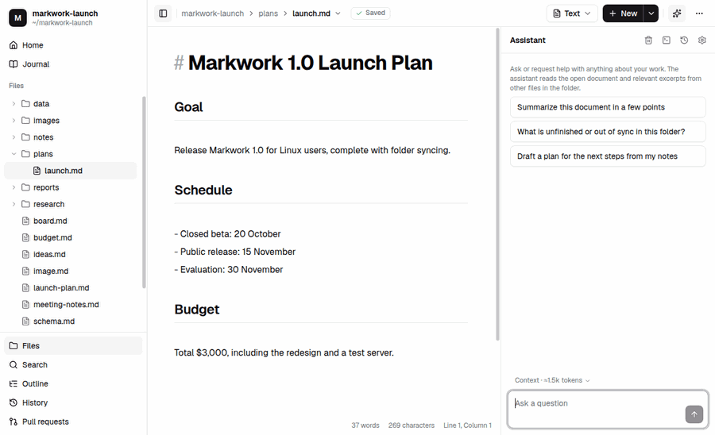

Agent
The Assistant panel
The place where you work with the agent: ask questions, request a plan, or request changes in plain language.

Agent folders
A folder with agent.json runs its own agent: instructions in Markdown, conversations that share the tab strip with your documents, and an independent session list on the right. Agent folders explains the marker file, the page layout, the session storage, and the background runtime.
Opening the panel
Press Ctrl+Shift+A or the Assistant button (the sparkles) in the header. The panel appears on the right side and is remembered the next time the app opens. Enter sends the message, Shift+Enter makes a new line.
The panel header has these buttons:
- Clock: the list of conversations saved in this folder (Conversation history)
- Broom: a new conversation
- Terminal: the Agent log window (Agent log)
- Gear: the API key, the model, thinking mode, and the switch for saving history
Model and thinking mode
The agent uses a DeepSeek model: deepseek-flash (the default) or deepseek-v4-pro, chosen in the panel settings. The Deep thinking checkbox turns on a thinking mode that is more thorough but slower and more expensive. The model's thinking process can be opened from the status card above the answer and is not saved to the conversation file.
Answers
- The answer streams as it is made and is shown with Markdown formatting.
- Quotes name the file and the line number, e.g.
meeting-1-oct.md:12. - While the agent works, one status card above the answer shows what it is doing (Thinking…, the current lookup and its step number, Writing the answer…) with a clock and a Stop button in the send button's place. When the answer is done it shrinks to 2 lookups and the duration; open it to see the context that was sent, every lookup (e.g. Searching text “Raka” → 3 lines), and the thinking process. If you stop the turn or it fails, the card says so and offers Retry.
- Under a finished answer: Copy, Insert into note (puts the answer at the cursor of the open note as one undo step), Retry, and Log (opens the agent log).
- Below the answer are the details of the context that was sent and the token usage, including the part served from the cache.
- The Stop button cancels the answer in progress; the result is sent back to the model so that it does not insist.
Asking for action
When you ask for a change, the agent calls a proposal tool. The review window opens automatically, and a compact status card remains in the panel with a Review changes button. See Proposals and approval.
Examples of suitable requests:
- “Write a summary of the competitor research in the research folder.”
- “Replace every ‘Raka’ with ‘Rakai’ in the meeting notes.”
- “Add the card ‘Prepare the demo’ to the Plan list with the tag #release.”
- “When was the release date changed and by whom?” (answered from the Git history)
Connection reliability
Connection failures, HTTP 429, and 5xx errors are retried at most twice, only if no text has been shown yet. Authentication errors are not retried. A stream that is cut off before it finishes is treated as failed, and an incomplete tool call is not executed.